Benessere Intimo Moderno
La linea VitaeBloom è dedicata al benessere più delicato, formulata con estratti biologici di uva Nero di Troia. Scienza e natura si uniscono per garantire protezione, freschezza e idratazenie quotidiana.
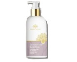
SOOTHING INTIMATE CLEANSER
Una delicata soluzione per l'igiene quotidiana, adatta a tutta la famiglia. Rispetta il pH e la flora cutanea, donando freschezza e comfort. Con moringa, niacinamide e acido lattico, svolge un'azione emolliente, lenitiva e protettiva contro secchezza e fastidi intimi.
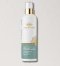
PURIFYING FACIAL CLEANSER
Detergente viso delicato con olio di Moringa. Rimuove trucco e impurità, lasciando la pelle morbida e luminosa. Arricchito con pantenolo e principi attivi idratanti, deterge in profondità rispettando l'equilibrio cutaneo.
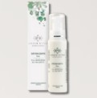
3-IN-1 CLEANER
Trattamento viso 3 in 1: deterge, strucca e idrata. Con olio di moringa, pantenolo e attivi idratanti, rimuove le impurità, riduce i rossori e dona luminosità, elasticità e comfort.
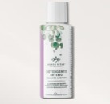
DELICATE SOOTHING INTIMATE CLEANSER
Detergente intimo lenitivo per uso quotidiano, adatto a tutta la familia. Con tensioattivi delicati, moringa, niacinamide, inositolo e attivi idratanti, lenisce le irritazioni, rispetta il pH e la flora cutanea.
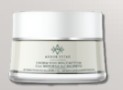
MULTI-ACTIVE FACE CREAM
Crema viso giorno/notte ricca e nutriente con il 99% di ingredienti naturali. Con estratto di moringa, stimola il rinnovamento cellulare, leviga la pelle e combatte i danni dell'inquinamento. Ideale per pelli secche i mature.
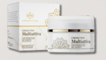
MULTI-ACTIVE MORINGA FACE CREAM
Trattamento viso 24 ore levigante, antiossidante e nutriente. Con estratti di moringa e formula al 99% naturale, stimola il ricambio cellulare, protegge dai danni ambientali i dona comfort immediato.
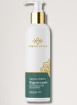
REGENERATING BODY CREAM
Emulsione leggera e setosa, ideale anche per pelli sensibili. Con acido glicirretico ß-18 e olio di moringa, nutre in profondità, lenisce le irritazioni, riduce i rossori e favorisce la rigenerazione cutanea.
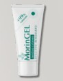
MORINGEL SKIN SOOTHING
Gel lenitivo a largo spettro con puro estratto di radice e foglia di Moringa oleifera. Calma rossori, prurito e fastidi da punture di insetti, meduse e scottature, donando un sollievo immediato.
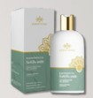
SILKY SHOWER BATH
Detergente corpo delicato e nutriente con estratto di foglie di moringa, glicerina e inulina. Purifica, idrata e rispetta il pH della pelle. L'olio essenziale di menta piperita dona freschezza.
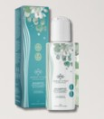
MORINGA RESTRUCTURING SHAMPOO WITH PROBIOTICS AND PHYTOKERATIN
Formula naturale con Moringa del Salento, probiotici e fitocheratina. Rinforza, purifica e protegge. Effetto anticrespo per capelli morbidi e lucenti. Schiuma delicata, profumo erbaseo-fiorito.
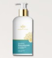
RESTRUCTURING SHAMPOO
Formula naturale con Moringa, probiotici e fitocheratina. Lenisce, riequilibra, ristruttura e protegge. Effetto anticrespo per capelli setosi e lucenti. Testato su pelli sensibili.